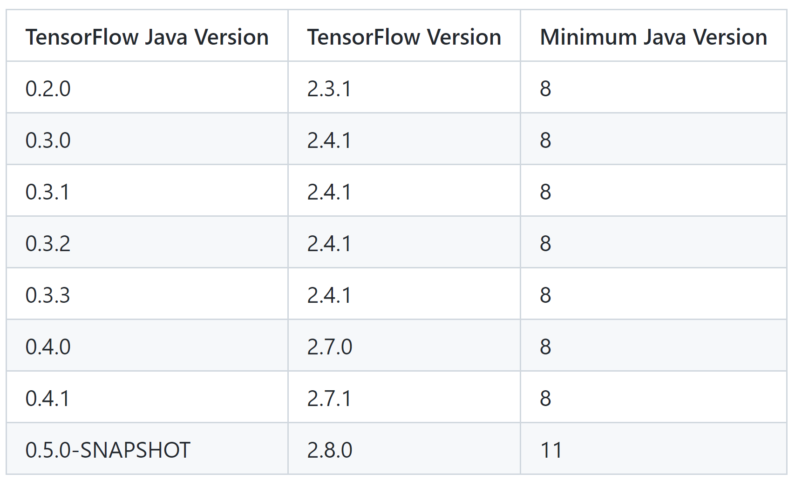

## Deep Learning mit TensorFlow, ja gut, aber in welcher Sprache? ### Python, Java, .NET, JavaScript, C oder C++ MD Dev Days 2022, https://md-devdays.de/act-detail/1000010 Oliver Zeigermann / oliver@zeigermann.de Folien: https://bit.ly/xxx
# Fahrplan * Modell in Python entwickeln * In Graph wandeln und mit tf serv und C++ servieren * In JS wandeln und in Anwendung einbauen * JS mit Teachable Maschine erzeugen und zum laufen bringen * Java mit neuer und alter Version
## Python Der Platzhirsch
## C/C++ Server und Embedded Systeme
### TensorFlow Modelle können als Graph abgespeichert werden <img src="https://raw.githubusercontent.com/tensorflow/docs/master/site/en/guide/images/intro_to_graphs/two-layer-network.png"> * https://www.tensorflow.org/guide/intro_to_graphs * https://www.tensorflow.org/api_docs/python/tf/Graph#as_graph_def
### Warum interessiert mich das? * Graphen enthalten alles was man zur Ausführung eines Neuronalen Netzes braucht * Damit kann man die Python-Welt verlassen * Man braucht lediglich eine Umgebung, die die Operationen in dem Graphen ausführen kann * So eine Umgebung ist bereits in TensorFlow mit C++ implementiert und auch die Python-Version beruht darauf
### C/C++ * Erlauben direkt Ausführung eines Graphen im Server-Betrieb * Modell-Server kann lokal unter Linux installiert werden * Oder man kann so ein Modell direkt bei GCP deployen * Bieten ebenso eine API: https://www.tensorflow.org/api_docs/cc
### Serving ``` saved_model_cli show --dir insurance-classifier --all ``` ``` tensorflow_model_server --port=8500 --rest_api_port=8501 \ --model_name=insurance --model_base_path=insurance-classifier ``` https://www.tensorflow.org/tfx/guide/serving
## Java
### Unterschiedliche Projekte 1. https://github.com/tensorflow/tensorflow/blob/master/tensorflow/java/README.md * https://www.tensorflow.org/api_docs/java/org/tensorflow/package-summary * Stabil, aber veraltet 1. https://www.tensorflow.org/jvm * Das aktuelle Projekt * Unterstützt nicht nur Deployment, sondern die volle API inkl. Training * Hat strategische Bedeutung, ist aber noch nicht stabil
### TensorFlow Java hat seine eigene Version  https://github.com/tensorflow/java/#tensorflow-version-support
### TensorFlowLite * Für mobile Geräte und Embedded Systeme * https://www.tensorflow.org/lite * https://www.tensorflow.org/lite/guide
# Vielen Dank Deep Learning mit TensorFlow, ja gut, aber in welcher Sprache? MD Dev Days 2022, https://md-devdays.de Bleibt gern im Kontakt Oliver Zeigermann https://www.linkedin.com/in/oliver-zeigermann-34989773/ oliver@zeigermann.de https://twitter.com/DJCordhose Diese Folien: https://bit.ly/xxx